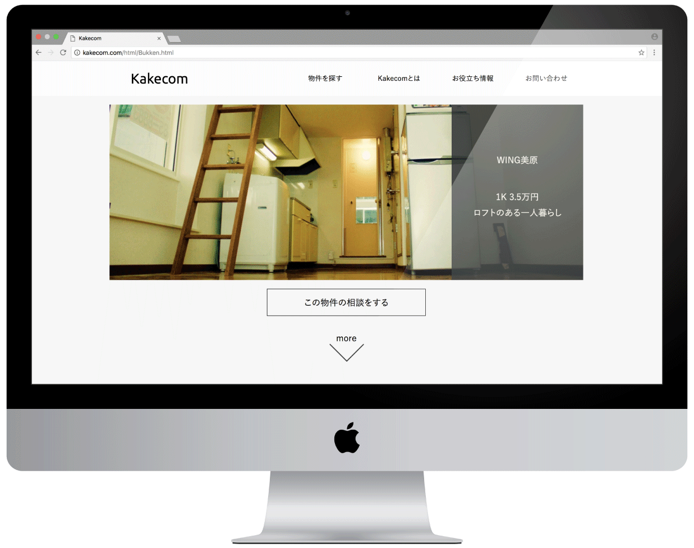
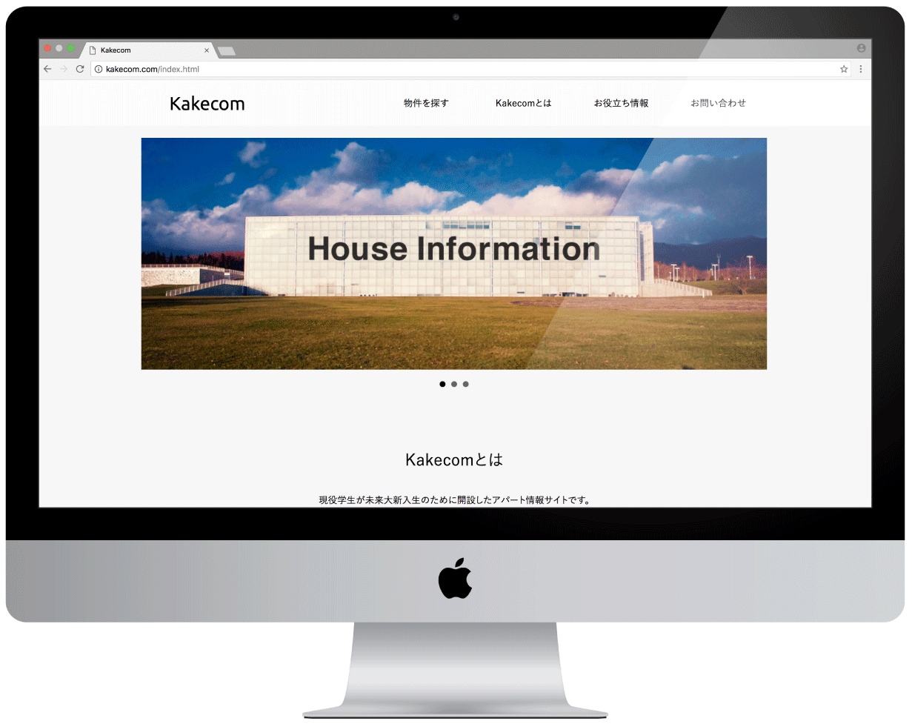
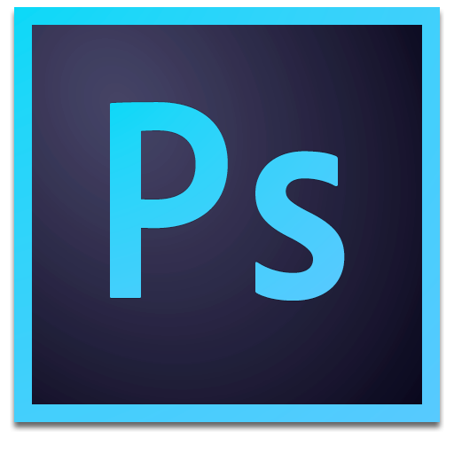
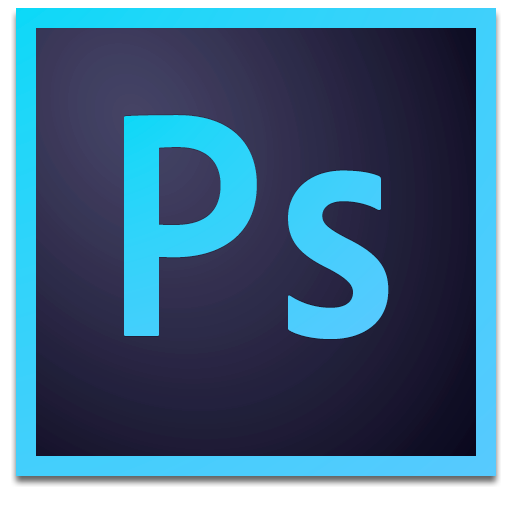

1.作品紹介
私が在学する公立はこだて未来大学の新入生の利用に特化した不動産情報サイト。
現役未来大生から見た、オススメの商業施設や一人暮らし部屋特集なども掲載している。
Kakecomに駆け込む
2.詳細
トップページにアクセスすると特徴的な本学の写真とHouse Informationのタイトル。
"Kakecomがどのようなサイトなのか"が一目でわかるようになっている。
ユーザが行うであろう主要の機能3つをアイコンで大きく表示。
ユーザビリティを意識したインターフェースである。
数ある物件をそれぞれヒーローイメージのみで魅せている。
カーソルを合わせると表示させるのは「間取り・賃料・紹介文」のみ。
学生が意識して確認する情報のみをピックアップした大胆なデザイン。
3.制作情報
-
使用ソフト


 

-
規模
学外個人制作
-
期間
2016年11月 - 12月